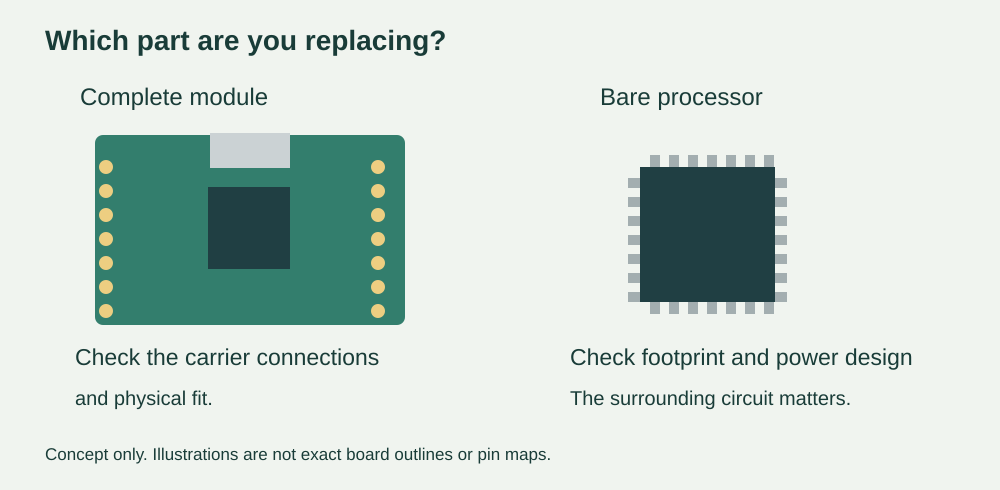

Your prototype works, but the next version needs more memory or more connections. A newer processor looks like an easy upgrade. If your team is using a plug-in development board, changing it may be a manageable experiment. If the processor is soldered onto your own circuit board, the same decision can require a new board design.
Before agreeing to the change, ask what is being replaced: the complete module, the chip, or the software running on it. “Compatible” needs an object. A connector can fit while the firmware needs updating; a familiar chip name can hide a different arrangement of power pins.
The move from RP2040 to RP2350 makes this distinction concrete. Raspberry Pi describes the Pico 2 board as hardware- and software-compatible with Pico 1. Its chip design guide, however, explicitly rules out replacing a bare RP2040 directly with an RP2350A. These statements refer to different parts of the product.

Start with the board you actually have
For a team building an interactive exhibit or a handheld controller, the first useful document is a picture of the current assembly with the intended replacement marked. Is the Pico attached through headers? Is it soldered to a carrier board? Or has an engineer already built a custom board around the processor? Those choices determine what can stay in place and what needs reviewing.
At chip level, the official guide gives a simple reason to stop before attempting a swap. RP2040 uses a 56-pin package; RP2350A uses a 60-pin package. Both have a 7 × 7 mm body, but the copper connection pattern is different. Similar dimensions do not make the chips interchangeable.
At module level, check the particular manufacturer's board, rather than extending a claim about the official Pico to every board containing the same processor. Connector positions, exposed signals, supply connections and onboard components are part of that module's design. Ask for a marked comparison against the carrier and enclosure you already have.
The power circuit is part of the upgrade
RP2350 power pins fall into separate groups: IOVDD supplies the digital I/O, DVDD supplies the chip's digital core, and VREG_VIN is the input to its on-chip regulator. Those are different functions even when a development board makes them invisible to the person plugging in USB.
For an RP2350 custom board, do not interpret “on-chip regulator” as “no external power circuit needed.” Raspberry Pi's design guide explains that the normal switching-regulator arrangement requires external components and careful layout. It specifically recommends following its component choices and layout.
This matters when a designer asks whether the electronics can fit a smaller enclosure. Moving the regulator components merely to clear a mounting hole can affect the circuit the team is relying on. Have the engineer assess that change against the current reference design, then verify the resulting board under its intended operating loads. A board that starts once is only the beginning of that check.
A real migration account shows the choice involved. In an August 8, 2024 Bus Pirate development post, the developer described trying both the RP2350's switching arrangement and an external core regulator, then choosing the latter for that board. A follow-up described reworking the processor area. This is the developer's reported experience with a particular product, not a general recommendation to copy its power circuit or an Anvol test result.
Keep the working behaviour, not just the source file
Once the hardware route is clear, identify the firmware built for the proposed board. Keep the old working unit and its software intact as a comparison. For MicroPython, record the interpreter build, application files and drivers. For a compiled application, record the target board and build configuration as well as the source revision.
A Chinese-language Seeed XIAO RP2350 pin-multiplexing guide contains a version-specific note about a pin-definition fix for the Arduino board package, referring to versions 4.2.0 and 4.2.1. That is a historical software-support example, not a claim that today's releases still need the workaround. It shows why “the code uploaded” and “each connection behaves correctly” deserve separate checks.
Choose a short sequence that represents the actual product: start from power off, read the attached sensor, update the display, accept a control input, and perform the intended output action. Compare the old and new assemblies using the same peripherals and power source. Record what changed. These are proposed migration checks, not a completed experiment.
Decide what the extra capability is worth
An upgrade is useful when it removes a specific limitation. Define that limitation before the redesign: perhaps the application cannot hold the required screen buffer, or the product needs additional independent interfaces. Then define the smallest demonstration that would show the new design solves it. “Newer chip” is not an acceptance criterion.
For an early user trial, keeping the proven module can leave more time to test the interaction. For a later custom board, migrating the processor may make sense, but the work includes the surrounding circuit, firmware and finished assembly. Ask for those activities to appear in the plan, alongside any enclosure or connector changes. Do not turn a successful module experiment into an assumption that the custom board is already validated.
If your team is weighing a processor upgrade before its next prototype revision, discuss the integration plan with Anvol. Bring the current board files or module details, the working software version, and the limitation you need to remove. That gives the review a concrete question: what can be reused, and what must be redesigned and tested?
The illustration is new explanatory artwork, not a record of a completed migration. Public references checked October 10, 2026.